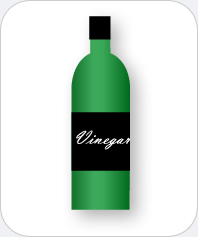

|
 |
Vinegar
Chemicals you may find: Acetic acid Water Citric acid Tartaric acid Vitamin B1 |
|
Vinegar is sour tasting liquid consisting mainly of acetic acid and water. Minor components may be vitamins such as riboflavin, vitamin B-1, other acids such as citric acid, tartaric acid and many more. Vinegar is produced by alcohol fermentation in which yeast turns sugars (from any fruit or material containing sugar) into alcohol. The next step involves a group of bacteria that converts the alcohol into acetic acid - vinegar. There are many different kinds of vinegars since there are many different sources that contain sugar. Vinegars can be produced from cider, wine or grapes, malt, sugar, rice, fruits and other foods containing sugar. Vinegar is primarily used as a condiment or preservative in the cooking industry to spice up food. However, there are other uses such as the healthy aspect in which vinegar kills and retard the growth of microorganisms. It also helps burn fat and acts as an antipyretic (reduces fever). Vinegar has use in the cosmetic field as a cleaning and disinfectant agent of the skin. |
|